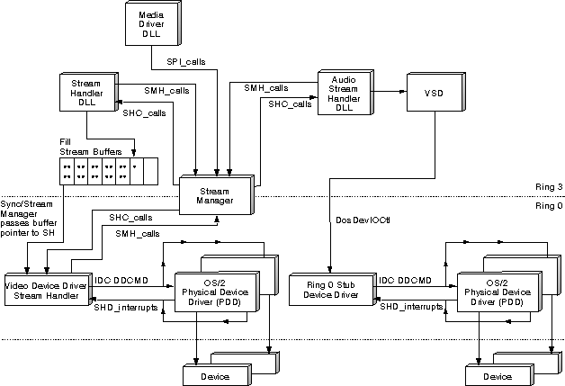

Pairs of stream handlers implement the transport of data from a source to a target device while the Synchronization and Streaming Manager (SSM) provides coordination and central management of data buffers and synchronization data.
A stream handler can be built as a device driver run at Ring 0, or as a dynamic-link library (DLL) run at Ring 3. See DLL Model: File System Stream Handler and Device Driver Model: Video PDD for examples of these stream handler types.
Some streams are ideally controlled by a direct connection between the stream handler and a physical device driver, whereas other streams are not associated with a data source or target that maps physically to a specific device. For example, the File System Stream Handler is a DLL because all file system I/O functions are available as Ring 3 OS/2 functions that service all file system devices.
After you determine the type of stream handler you require (DLL or DD), you must incorporate the required functional modules in your stream handler design. Refer to the following figure, which represents the key modules in both DLL and device driver stream handler components.
Although the detailed coding practices of building OS/2 DLLs and device drivers differ considerably, most logic for a stream handler is not affected by this choice. The structure of the DLL stream handler closely resembles the device driver stream handler, with few exceptions.
The following figure illustrates the logical structure of the Sync/Stream Manager (SSM) and its relationship with stream handlers. The Sync/Stream Manager DLL exports SPI services to higher-level OS/2 multimedia components (such as media drivers) and exports Stream Manager Helper (SMH) messages to support the stream handler DLLs. Additional SMH messages are exported by the Sync/Stream Manager device driver to stream handler device drivers using standard OS/2 inter-device driver communication (IDC) interfaces (established using DevHelp_AttachDD).
The following table illustrates the stream handlers are provided by OS/2 multimedia.
Note: See Stream Handler Module Definitions for information describing the high-level design and operation of the stream handlers provided with OS/2 multimedia.
旼컴컴컴컴컴컴컴쩡컴컴컴컴컴컴컴컴컴컴컴컴컴컴컴컴컴컴컴커 쿞tream Handler 쿏escription � 쳐컴컴컴컴컴컴컴탠컴컴컴컴컴컴컴컴컴컴컴컴컴컴컴컴컴컴컴캑 쿌udio 쿣SD interface to a vendor-specific � � 쿭river. Supports PCM, MIDI, ADPCM � � 쿯ormats. � 쳐컴컴컴컴컴컴컴탠컴컴컴컴컴컴컴컴컴컴컴컴컴컴컴컴컴컴컴캑 쿘IDI Mapper 쿑ilters data using the selected MIDI � � 쿺ap. � 쳐컴컴컴컴컴컴컴탠컴컴컴컴컴컴컴컴컴컴컴컴컴컴컴컴컴컴컴캑 쿑ile system 쿢ses file system services to read or � � 퀇rite data from any associated device. � 쳐컴컴컴컴컴컴컴탠컴컴컴컴컴컴컴컴컴컴컴컴컴컴컴컴컴컴컴캑 쿘ulti-track 쿝eads and splits interleaved data. � 쳐컴컴컴컴컴컴컴탠컴컴컴컴컴컴컴컴컴컴컴컴컴컴컴컴컴컴컴캑 쿣ideo 쿔n conjunction with CODECs, outputs � � 퀆ideo data to the display. � 쳐컴컴컴컴컴컴컴탠컴컴컴컴컴컴컴컴컴컴컴컴컴컴컴컴컴컴컴캑 쿞ystem Memory 쿟ransfers data to and from system memory� � 쿫uffers. See Cuepoint Event Support. � 쳐컴컴컴컴컴컴컴탠컴컴컴컴컴컴컴컴컴컴컴컴컴컴컴컴컴컴컴캑 쿎D-ROM XA 쿝eads CD-ROM XA data and splits audio � � 퀂ectors from video and data sectors. See� � �CD-ROM XA Stream Handler. � 쳐컴컴컴컴컴컴컴탠컴컴컴컴컴컴컴컴컴컴컴컴컴컴컴컴컴컴컴캑 쿎D-DA 쿝eads digital audio data directly from � � 퀃he CD-ROM driver. Can be used to play � � 쿫ack CD audio data using an audio � � 쿪dapter. � 읕컴컴컴컴컴컴컴좔컴컴컴컴컴컴컴컴컴컴컴컴컴컴컴컴컴컴컴켸